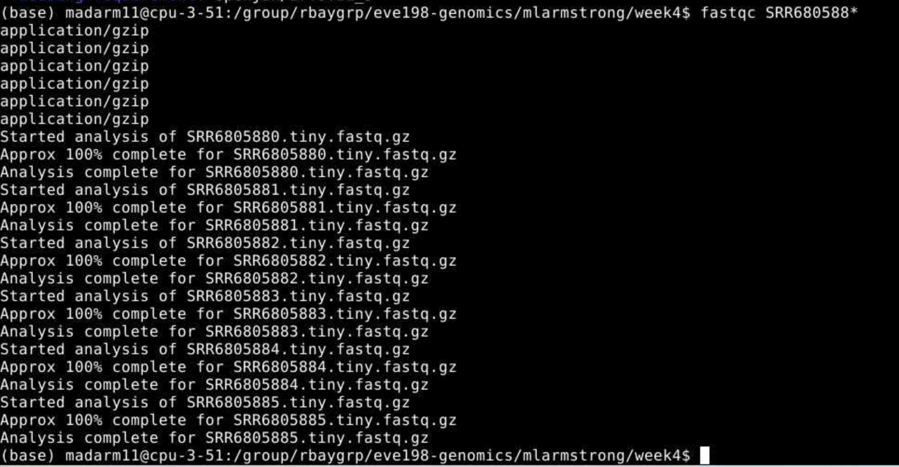
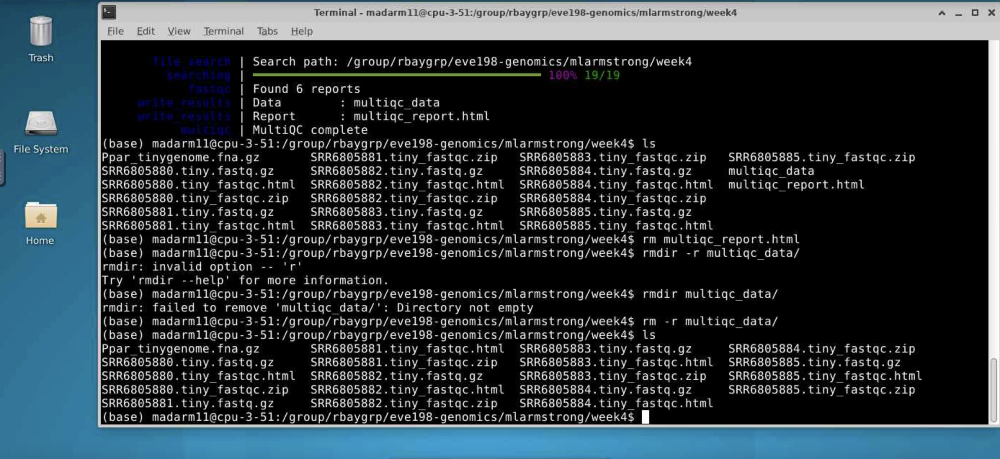

5 Week 4- What is a Genetic Variant?
You’ll find the lecture discussing the definition and identification of genetic variation here (via slideshow here: Week 4 Slides)
5.1 Main Objectives
- Be able to define what a genetic variant is
- Understand the pipeline for identifying genetic variants
- Understand the difference between SAM and BAM file formats and their use
- Learn how to call a genotype and quantify genotype likelihoods
5.2 Step 1: Download data
Below we’ll show you some commands to download data onto your instance, or to move data between your computer and the cloud.
5.2.1 Getting data from the cloud
There are two programs that will download data from a remote server to
your local (or remote) machine: wget and curl. They were designed to
do slightly different tasks by default, so you’ll need to give the
programs somewhat different options to get the same behaviour, but they
are mostly interchangeable.
wgetis short for “world wide web get”, and it’s basic function is to download web pages or data at a web address.cURLis a pun, it is supposed to be read as “see URL”, so its basic function is to display webpages or data at a web address.
Which one you need to use mostly depends on your operating system, as most computers will only have one or the other installed by default.
Before we can start our download, we need to know whether we’re using
curl or wget. To see which program you have, type:
which is a BASH program that looks through everything you have
installed, and tells you what folder it is installed to. If it can’t
find the program you asked for, it returns nothing, i.e. gives you no
results.
On Mac OSX, you’ll likely get the following output:
We will be using wget to retrieve data from the class github, but if you want more practice with this tool there is an additional tutorial below:
Ensembl data retrieving exercise:
Let’s see if the file from ensembl downloaded
It did! Woo!
Download the data from the IntroGenomics_Data Week 4 repository on github in your individual directory. Make sure you are there first before you do the wget step!
cd /navigate/to/your/directory
wget https://raw.githubusercontent.com/mlarmstrong/IntroGenomics_Data/main/week4.zipAnd then unzip week4 so we can work with the data inside:
5.2.2 tools for today’s class
These are the programs we will be using today:
- fastqc: used to view the quality of the read files
- samtools: allows us to filter and view our mapped data
- bowtie2: to map our reads to the reference genome
- cutadapt: will trim adaptor sequences from the reads
- angsd: used to find variants in our data
To load these tools navigate to your directory and type the following code:
You should get something on your screen that looks like this:
madarm11@farm:/group/rbaygrp/eve198-genomics/mlarmstrong$ module load fastqc
Loading openjdk/17.0.11_9
Loading fastqc/0.12.1
Loading requirement: openjdk/17.0.11_9This will load our module! Check to see that it loaded and what version you are working with using this command:
This tells us that we have fastqc loaded and we are using version 0.12.1. This is important information to report in papers too when you discuss what genomics methods you’ve used. Repeat these steps for all five packages! All of the package names are the same except for cutadapt. Do load this and check the version control type:
Now we’re ready to get going. The first thing we’ll do is have a look at
our data and directories to make sure we know where everything is. This
is the general pipeline of what we will be doing today: 
We have already done step 1! Change directories so that you are inside
the week4 directory inside your individual directory. If you ls into
this directory you should see 6 files with a .fastq.gz extension and 1
tiny genome file with a .fna.gz extension.
5.3 Step 1.2: Raw read quality control
Next let’s use the program fastqc to check the quality of our data files:
- Readout should say:
- Started analysis for SRR6805880.tiny.fastq.gz
- Analysis complete for SRR6805880.tiny.fastq.gz
Let’s look to see that it worked
$ ls
Ppar_tinygenome.fna.gz SRR6805880.tiny_fastqc.zip SRR6805883.tiny.fastq.gz
SRR6805880.tiny.fastq.gz SRR6805881.tiny.fastq.gz SRR6805884.tiny.fastq.gz
SRR6805880.tiny_fastqc.html SRR6805882.tiny.fastq.gz SRR6805885.tiny.fastq.gzLooks good! Fastqc generated two outputs for us, a .html and a .zip
directory
Let’s run fastqc on the remaining files, and then we’ll take a look at
the output. You may have noticed fastqc just used the same file name to
produce our output with different extensions. We can take advantage of
that by running fastqc on all our datafiles with the wildcard *.
 You may initially get an error message because fastqc doesn’t see the .fastq file extension on some of our files. It simply skips these and moves on the the next file.
To view the output of fastqc you can access the html files for each sample. To make one big html file with all of our samples we can run multiqc. More information on this tool here: https://github.com/MultiQC/MultiQC. For now we will just be looking at each html individually.
Class Exercise 1: looking at your fastqc.html files!
Navigate to
home/group/rbaygrp/eve198-genomics/yourdirectory/week4to find your html files you created with fastqc. Try clicking on individual html files too for information specific to each fastq sample. These will look more similar to what I showed in the mini-lecture at the beginning of class. 
5.4 Step 2: Trimming to remove adapters
There are many programs to trim sequence files. Cutadapt is relatively easy to run with the code below, once we have identified our adaptor sequence and takes the general form below.
Let’s do this on one of our files to test it out.
This works for a single file, but if we want to do it for all our read files we need to either do them all individually (slow and error prone) or use a for loop.
for filename in *.tiny.fastq.gz
do
base=$(basename $filename .tiny.fastq.gz)
echo ${base}
cutadapt -g TGCAG ${base}.tiny.fastq.gz -o ${base}.tiny_trimmed.fastq.gz
doneYay! You should see a little report for each of these files that showing how many reads were trimmed and some other info (how long are the reads, etc)
You can check if the trimmed files are there with:
Class Exercise 2
Run fastqc on our .trimmed reads and compare the html with the .untrimmed files. What main difference do you see between them?
Our reads are now ready to be mapped to the genome!
5.5 Step 3: Building an index of our genome
First we have to index our genome. We’ll do that with the bowtie2-build command. This will generate a lot of files that describe different aspects of our genome
We give bowtie2-build two things, the name of our genome, and a general name to label the output files. I always keep the name of the output files the same as the original genome file (without the .fna.gz extension) to avoid confusion.
This should produce several output files with extensions including: .bt2 and rev.1.bt2 etc (six files in total)
5.6 Step 4: Map reads to the genome
Let’s map those reads using a for loop
for filename in *.tiny_trimmed.fastq.gz
do
base=$(basename $filename .tiny_trimmed.fastq.gz)
echo ${base}
bowtie2 -x Ppar_tinygenome -U ${base}.tiny_trimmed.fastq.gz -S ${base}.sam
doneYou should see a bunch of text telling you all about how well our reads mapped to the genome. For this example we’re getting a low percentage (20-30%) because of how the genome and reads were subset for this exercise.
You’ll also notice that we have made a bunch of .sam files. THis stands
for Sequence Alignment Map file. Let’s use less to look at one of
these files using less
Class Exercise 3
Now let’s write a for loop to map the untrimmed files to the genome. How do the alignments compare to the trimmed ones we just did as a class?
5.7 Step 5: sam to bam file conversion
The next step is to convert our sam file to a bam (Binary Alignment Map file). This gets our file ready to be read by angsd the program we’re going to use to call SNPs.
5.8 Step 6: Genotype likelihoods
There are many ways and many programs that call genotypes. The program that we will use calculates genotype likelihoods, which account for uncertainty due to sequencing errors and/or mapping errors and is one of several programs in the package ANGSD. The purpose of this class is not to discuss which program is the “best”, but to teach you to use some commonly used programs.
angsd needs a text file with the .bam file names listed. We can make
that by running the command below
Look at the list:
Run the following code to calculate genotype likelihoods
This will generate two files, one with a .arg extension, this has a record of the script we ran to generate the output, and a .maf file that will give you the minor allele frequencies and is the main output file. If you see these two files, Yay!! We did it!
We can change the parameters of the angsd genotype likelihoods command
by altering the values next to -SNP_pval. If we remove the -SNP_pval
command entirely we get ~72000 sites retained! Wow! That seems like a
lot given our ~20% mapping rate. If you instead increase the p-value
threshold to 1e-3 we find 3 SNPs.
To see what the other parameters do you can run the following:
5.9 Group Work Activity- Calling Variants at a Larger Scale
For this exercise we ran everything in the same directory and you can
see that we generated quite a few files by the time we were done. Many
population genomic studies have data for hundreds of individuals and
running everything in the same directory gets confusing and messy.
However, having the data in a different directory from the output
complicates running things a little (you have to remember which
directory you’re in). Make a new directory inside your own week4
directory called raw_data and mv the raw data files (those that end
in fastq.gz, and the tinygenome) into it. Then move everything that we
generated into a folder called old_outputs.
Now you can write your own slurm script to call genetic variants. Use
the code above to help you process everything in one single script. Make
a directory for the trimmed_reads and sam_bam files each. Submit a
copy of your script for this activity on canvas under the ‘Assignments’
tab for ‘Week 4: Calling Variants’.
5.10 Key Points
- The general pipeline for identifying genetic variants first starts with trimming adaptors from the sample reads, indexing the reference genome, mapping the reads to the genome, converting the sam file to a bam (binary) file and then calculating the genotype likelihoods.
- There are many tools that are useful for calling genetic variants, including samtools, bowtie2, cutadapt and
- SAM and BAM files are similar, but BAM files are in a binary format which makes it easier to process and call SNPs
- ANGSD is a useful program for calculating genotype likelihoods and accounts for uncertainty due to sequencing errors and/or mapping errors
Class Exercise Solutions
Exercise: Solutions
Exercise 1. just look at your html files! Exercise 2. We should no longer see the red error flag for the per base sequence quality or base pairs conten. code: fastqc *trimmed.fastq.gz Exercise 3: The full genome and full read files should have a much higher mapping rate (70-80%) > than our subset.